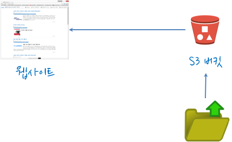
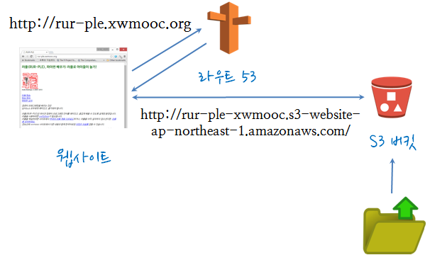
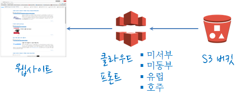
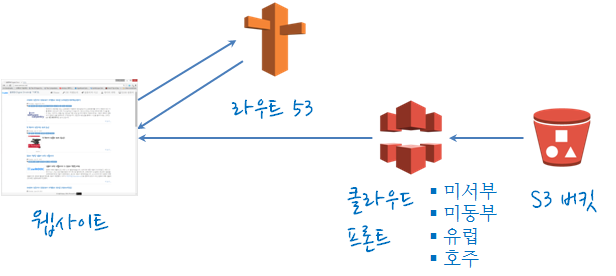

아마존 웹서비스
AWS 정적 웹 서비스 최적화
학습 목표
- 정적 웹 서비스 최적화
1. 아마존 웹 서비스를 활용한 정적 웹 서비스
1.1. 정적 웹 서비스 아키텍쳐

아마존 웹 서비스를 이용한 정적 웹 사이트 구축 구성요소는 다음과 같다. - 제킬: - GitHub: - S3 버킷: - 클라우드 프론트(CloudFront): - 라우트 53:
1.2. S3를 활용한 정적 웹 서비스 구축

- S3 버킷:
index.html파일을 포함한 정적 웹사이트 서비스를 위한 원데이터를 업로드한다.- 권한(Permissions):
Add bucket policy를 클릭하고 기본 정책을 저장한다.- S3 버킷 정책에 대한 자주 사용하는 유형을 아마존 웹 서비스에서 잡아놔서 그중 적합한 것을 골라 사용한다. 참조: 아마존 웹 서비스 버킷 정책 예제
- 정적 웹사이트 호스팅(Static Website Hosting):
Enable website hosting에index.html파일을 추가한다.
- 권한(Permissions):
{
"Version":"2012-10-17",
"Statement":[{
"Sid":"PublicReadGetObject",
"Effect":"Allow",
"Principal": "*",
"Action":["s3:GetObject"],
"Resource":["arn:aws:s3:::example-bucket/*"
]
}
]
}
1.3. 사용자 지정 도메인으로 정적 웹서비스로 개발된 S3에 정적 웹 사이트 설정
사용자 구매한 지정 도메인으로 정적 웹서비스로 개발된 S3에 정적 웹 사이트 설정하기 위해서 다음 절차를 거친다.
- 도메인 등록, 만약 도메인이 없다면 다양한 제공업체를 통해서 구입한다.
- S3 버킷 생성과 개발된 정적 웹서비스를 S3 버킷에 올린다.
- 아마존 라우트53 호스팅 영역 생성하고 환경설정한다.
- DNS 서비스를 제공하는 아마존 라우트53으로 설정한다.

라우트53 → 호스트 존(Hosted Zones) 에서 해당 도메인을 선택하고 Go to Record Sets → Create Record Set에서 도메인 명칭과 S3 버킷 설정된 것을 연결한다.
S3 버킷 명칭을 rur-ple.xwmooc.org 으로 설정했으면, Name은 rur-ple, Type은 A - IPv4 address, Alias:는 Yes를 선택하고, Alias Target:은 S3 버킷 명칭을 선택하거나, 복사해서 넣는다.

2. S3와 클라우드프론트(Cloudfront) 연동
정적 웹 서비스를 개발해서 S3에 저장하고 이를 클라우드프론트(CloudFront)를 통해 배포하는 방식은 다음과 같다.

- S3 버킷에 개발된 정적 웹서비스를 업로드 합니다.
- 클라우드프론트 배포 서비스로 가서 Web(웹), RTMP(동영상) 중 웹을 선택하고 설정을 합니다.
Origin Settings에 정적 웹 서비스를 올린 S3 버킷을 선택합니다.
- 배포가 완료되면
Domain Name에http://dsssmxxsjebsd.cloudfront.net/와 같이 생성된 것을 확인한다. - (크롬)웹 브라우져로 접속해서 단축키 F12 혹은 메뉴 → 도구(L) → 개발자 도구(D) 를 통해 개발자 도구를 실행하고
Network에서Header패널에서X-cache: Hit from cloudfront를 확인한다.
1.4. 정적 웹 사이트 배포

참조: Static Sites using AWS S3, CloudFront, and Route 53
S3 버킷에 정적 웹사이트를 자동으로 넣는 방법 - 참고: GitHub Manage an S3 website - 참고: Setting up AWS credentials
3. Elastic IP 변경
공개형 IP (Public IP)를 IP 주소에 연계한다.
4. 웹 콘텐츠 올리기
웹서비스 콘텐츠 올리는 권한 부여.
$ chown -R ubuntu /var/www/